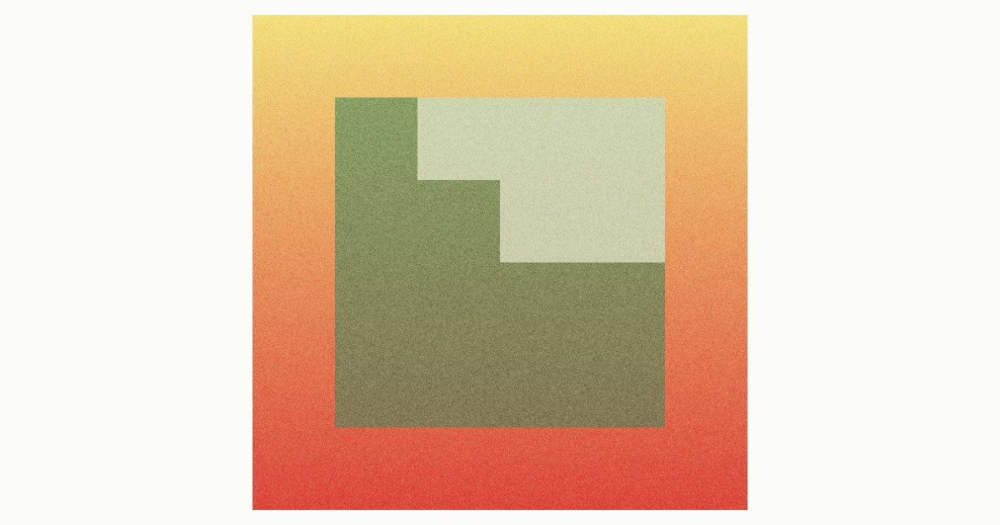

Karratuak. A square deciding, again and again, whether to divide. Recursive subdivision against a threshold — structure as the only ornament. Atmosphere is a setting, not another work: the gradient beneath and the grain above can be lowered to nothing, and the rule is unchanged.
Karratuak. Un cuadrado decidiendo, una y otra vez, si dividirse. Subdivisión recursiva contra un umbral — la estructura como único ornamento. La atmósfera es un ajuste, no otra obra: el degradado debajo y el grano encima pueden bajarse a nada, y la regla no cambia.
Karratuak. Karratu bat, behin eta berriz, zatitu ala ez erabakitzen. Azpibanaketa errekurtsiboa atalase baten aurka — egitura apaingarri bakar gisa. Atmosfera ezarpen bat da, ez beste obra bat: azpiko degradatua eta gaineko pikorra ezerezera jaits daitezke, eta araua ez da aldatzen.
A square deciding, again and again, whether to divide. It splits in four and always discards the fourth: that missing quarter is what the series says.